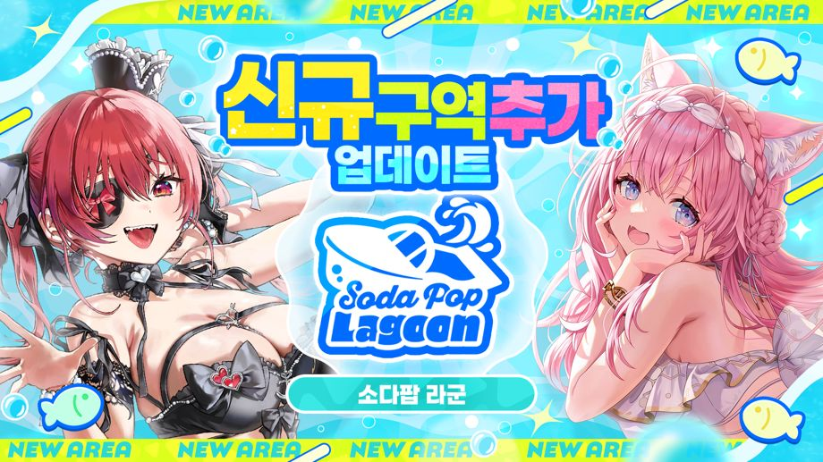
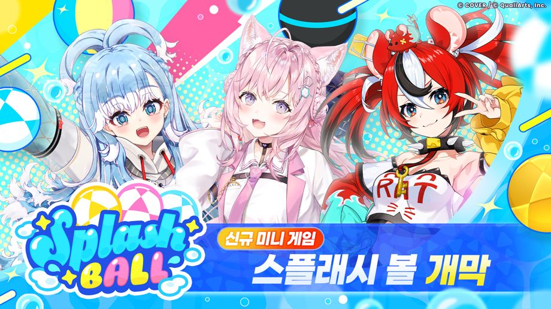

2026-09-29 11:00:00부터 신규 구역 「소다팝 라군」 등장!
◆신규 구역 등장일
2026-09-29 11:00:00~
◆개방 조건
・메인 퀘스트 2장 12화 「떠들썩한 시간은 끝나지 않아」 클리어
신규 구역 「소다팝 라군」 개요

소다팝 라군은 드넓은 바다와 섬들로 구성된 신규 구역입니다.
구역 내에서는 「보트」를 타고 이동할 수 있습니다.
스토리를 진행하면 이동 가능한 해역이 확대됩니다.
신규 기능 「물고기 낚시」 등장!

「물고기 낚시」는 구역 내 낚시 스폿에서 물고기를 낚을 수 있는 신규 기능입니다.
낚을 수 있는 물고기는 미끼나 스폿, 시간대마다 달라집니다.
물고기를 낚으면 보상을 획득할 수 있고, 낚은 물고기는 도감에 기록됩니다.
또한, 낚은 물고기 종류에 따라서도 보상을 획득할 수 있습니다.
※신규 기능 「물고기 낚시」는 메인 퀘스트 3장 「소다팝 라군」을 진행하면 개방됩니다.
신규 미니 게임 「스플래시 볼」 추가!

스플래시 볼은 3명씩 3팀으로 나뉘어 싸우는 멀티 플레이 미니 게임입니다.
보트를 타고 공을 상대 팀 골대에 넣으면 상대 팀으로부터 득점을 획득할 수 있습니다.
팀 순위나 개인 스코어에 따라 보상을 획득할 수 있습니다.
※신규 미니 게임 「스플래시 볼」은 메인 퀘스트 3장 「소다팝 라군」을 진행하면 개방됩니다.
※멀티 플레이의 프라이빗 룸에서는 메인 퀘스트 1장 4화 「Mythical Connection」을 클리어하면 플레이할 수 있습니다.
주의 사항
・개최 기간 및 내용은 예고 없이 변경될 수 있습니다.